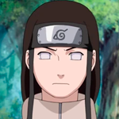
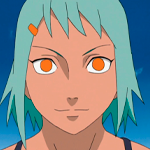

Naruto
Sasuke
Sakura
Kakashi
Hinata

Kiba
Shino
Kurenai
Shikamaru
Ino

Choji
Asuma
Gaara
Kankuro
Temari

Rock Lee

Neji
Tenten
Gai
Itachi
Kisame
Deidara
Hidan
Nagato
Konan
Kakuzu
Obito
Madara
Hashirama
Tobirama
Hiruzen
Minato
Tsunade
Orochimaru
Kimimaro
Kidoumaru
Sakon
Jiroubou
Tayuya
Jiraiya
Iruka

Yamato
A

Killer B
Omoi
Darui
Karui
Cee
Yugito
Yagura
Roshi
Han
Utakata

Fu
Mei
Onoki
Rasa
Choujuurou
Rin
Kushina